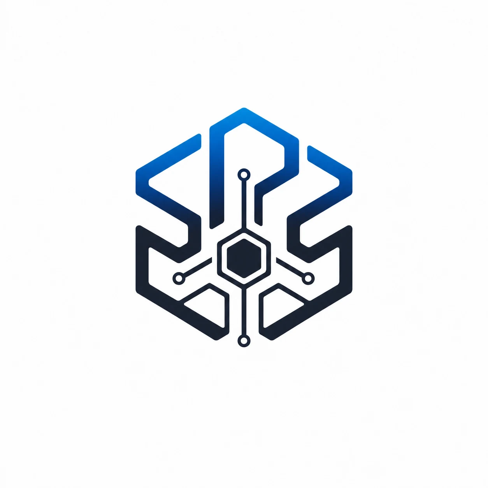
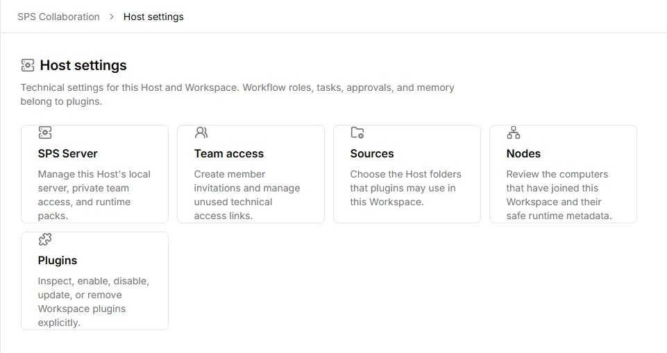

Workspace
Manage project materials, work history, outputs, and tool connections in one workspace.

SPSA modular, local-first AI development workspace.
Private Beta — Development in Progress

Manage project materials, work history, outputs, and tool connections in one workspace.
Connect supported AI tools and runtimes to your development workflow.
Add tools and workflows on top of SPS Core. Available plugins vary by build.
Choose where project files live and approve connections to the tools and services you use.
SPS is a standalone desktop workspace that can be configured for different development environments.
Provides the shared runtime, Workspace, and foundation for plugins.
Add optional workflows for games, apps, web development, or automation.
Use approved Hosts, Nodes, command-line tools, and local runtimes.
These are intended uses for SPS. Workflow availability depends on the current beta build and the plugins you can access.
Development work for games and interactive projects.
Build websites, apps, and other software.
Bring AI tools into your development process.
Configure your workspace with plugins suited to the project.
Stable downloads are paused. The Windows x64 preview is for installation and first-launch checks. Contact us to ask about private beta access.